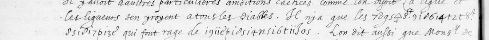
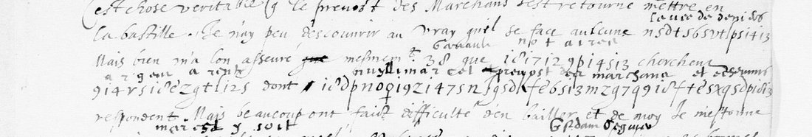

01 The document
Fr. 3976 is a volume of Nevers’s papers for 1588, on Gallica as btv1b9060548h. F. 133r is view 223, f. 133v view 224 and f. 134r view 225. The letter is dated at the head 6 de Juin 1588 and at the foot Ce 6. Juing a 10 heures du soir, and it closes with the cipher monogram of ff. 62 and 131. The cipher runs are set into the clear sentences, as on f. 62. The writer uses bare code numbers as well: 4, 9, 10, 11, 12, 23, 24, 25, 33, 79, 94, 102, 104, 105 and 106. Two of them, 9 and 106, stand inside a run and are underlined, like the code numbers in the clear text.

7δg5ꝗ St 9 1d 6 14 + 2t St 8 s 1d 17 p 13 ε = curez St André et St Benoist, qui font rage de 19 11 ε p 1d s 14 n s 16 t 11 δ o s = mutiner le peuple. Image: Bibliothèque nationale de France, fr. 3976 f. 133v, via Gallica (btv1b9060548h, view 224).02 The key
A sign is one character, or the figure 1 (written like a dotted i) followed by a character. Several signs stand for more than one letter. The table of the f. 62 reading (write-up, nevers1588/key.md) was applied unchanged. This letter confirmed it and added three values.
- The y with a cross below (ϙ) is y: Montmorency, artillerye.
- The 4 with a cross below is z: curez, faulx bruictz, and Pichenaz for Pigenat. The f. 62 table had it as q.
- A bracket-shaped sign, and a long J-shaped sign, are n: nommé, conseil, Nevers en court, Nuilly. The J-shaped sign is p in prevost.
- z is a in Arsenac and Pichenat. 9 is r in artillerye and h in Pichenat and Cotteblanche. o is u once, in bruictz.
The code numbers are identified from the context here and on ff. 62 and 131:
| code | reading | evidence |
|---|---|---|
| 11 | le Roy | glossed on f. 131; “des deputez vers 11” |
| 24 | the duc de Nevers | glossed nevers on f. 131; “24 se peult souvenir qu’estant a La Cassine” |
| 102 | Paris | “102 renvoye des deputez vers 11” |
| 9 | the duc de Guise | “9 voullant faire sortir l’artillerye de l’Arsenac pour aller a Corbeil” |
| 12 | Catherine de Médicis | “chez 12 elle a resolu d’envoyer 79 vers 24” |
| 104 | a woman of the Nevers household, probably the duchess | “l’ont supplié de les accompaigner d’un mot de lettre, ce qu’elle a faict” |
| 10 | the duc d’Épernon | glossed Espernon on f. 139; “la survenue de 10 qui est maintenant absent” |
| 38 | Garrault | glossed on f. 139 |
| 98 | la paix | glossed on f. 139: “par ce moyen l’on aura 98” |
| 107 | the Grand Écuyer | glossed on f. 139: “107 s’insinue es bonnes graces de 9” |
| 4, 23, 25, 33, 79, 94, 105, 106 | not identified | 4, 9, 24 and 94 are the names Paris offers the King “a son choix” |
The gloss over 24 on f. 131 was recorded as “Navarre” when f. 62 was read. Looked at again, it reads nevers, and Nevers fits every use of 24 here. The Nevers notes have been corrected.
03 The reading
The clear text is given in modern word division. The cipher runs are in bold, and cuts are marked […].
n 9 7 2 13 f p 1d t = La Cassine, Nevers’s château in the Rethelois, 11 ne luy escripvoit qu’a force. Image: Bibliothèque nationale de France, fr. 3976 f. 133r, via Gallica (btv1b9060548h, view 223).Je suis tres marry qu’aiez pris en mauvaise part ce qui a esté escript a 24 […] Mais parce qu’avant son partement il offroit a 11 de demourer s’il en estoit de besoing, on estimoit qu’il se portast encore mieulx qu’alors, et par consequent sans peril de sa personne il pouvoit s’approcher de Roy. Or nous avions bien consideré que si Nevers alloit veoir 11 sans estre mandé d’affection, il y pourroit recevoir quelque pire traictement […] Secondement, 24 se peult souvenir qu’estant a La Cassine 11 ne luy escripvoit qu’a force, et neantmoings apres qu’il fut venu il luy fit caresse et honneurs […] Tiercement, tout le monde desire Nevers en court beaucoup plus que l’on ne faisoit alors. Et non seulement ligueurs mais aussi les aultres […] Jusque la qu’il commence ja a courir ung bruit que 102 renvoye des deputez vers 11, avec charge entre aultres choses de le supplier que pour tesmoigner a 102 qu’il pardonne et n’a mauvaise volonté, il luy laisse pour 94 ou 4 ou 9 ou 24 a son choix. Ledit 102 n’a encore envoyé vers Nevers […]
Il n’y a que les curez St André et St Benoist qui font rage de mutiner le peuple. […] Quant a l’eslection des prevost des marchans et eschevins, elle n’a esté aultrement faicte que je vous l’ay mandé, que j’avois entendue de Pichenat. […] Mais comme vous scavez, ce ne sont gens d’estat, de sorte que par ruses et faulx bruictz on leur faict tousjours passer quelque carriere, car si tost que quelque chose a esté resolu en l’hostel de ville, le prevost Chapelle ne fault de rapporter le tout au conseil de 9 et 106 pour adviser les moyens de rompre les deliberations qui ne leur plaisent, ou assistent tousjours 33 et de Bray, l’evesque de Lion, Nuilly. L’on m’a asseuré neantmoings que ces jours passez 9, voullant faire sortir l’artillerye de l’Arsenac pour aller a Corbeil, l’un des eschevins, nommé Cotteblanche, dist qu’il ne consentiroit jamais que cela se feist sans permission du Roy.
[f. 134] Quant a 33, j’ay perdu tout ung jour pour cuyder le veoir, mais il fut toute l’apresdisnée chez 105, qui est logé au logis de Montmorency.
Translation of the runs’ sense. Nevers was being urged to come to court, where everyone wanted him, the ligueurs included. Paris talked of asking the King, as a sign that he pardoned the city, to let it choose among four names. Only the curés of Saint-André (Christophe Aubry) and Saint-Benoît (Jean Boucher) were still inciting the people. The new municipality was steered by rumour, and La Chapelle-Marteau reported everything decided at the Hôtel de Ville to Guise’s council. With 33, “de Bray”, Pierre d’Épinac archbishop of Lyon and the président de Neuilly in attendance, that council undid whatever it disliked. When Guise wanted the Arsenal’s artillery for Corbeil, the échevin Cotteblanche refused without the King’s permission.

04 The letter of 9 June (f. 139)
Three days later the informant wrote again: BnF fr. 3976 f. 139, piece 74 of the BnF notice, “Lettre chiffrée avec déchiffrement contenant des nouvelles de Paris. Ce 9 juing 1588”. It is not on DECODE. The letter is one page with six cipher runs and code numbers, in the same hand and with the same monogram. Here a contemporary decipherer wrote the plaintext over every run and over most of the numbers. The key built from ff. 62 and 131 was applied to the six runs before the glosses were compared. It reads all 106 signs, and each reading matches the gloss.

n s d t 5 6 5 v t l p s 14 13 glossed leuee de deniers; 38 glossed Garrault; 1d 17 12 9 p 14 5 13 notaires; 9 14 r s 1d ε z g t l 12 s argent a rente; and the long run glossed Nuylli Marcel prevost des marchans et eschevins. Image: Bibliothèque nationale de France, fr. 3976 f. 139, via Gallica (btv1b9060548h, view 234).C’est chose veritable que le prevost des Marchans s’est retourné mettre en la Bastille. Je n’ay peu descouvrir au vray qu’il se face aucune levee de deniers. Mais bien m’a l’on asseuré, mesmement 38 [Garrault], que notaires cherchent argent a rente, dont Nilly, Marcel, prevost des marchans et eschevins respondent. Mais beaucoup ont faict difficulté d’en bailler, et de moy je m’estonne que Marcel y soit meslé. On dit que 107 [le Grand Escuyer] s’insinue es bonnes graces de 9 [Guise] et en presse. Son frere a aussi quitté 10 [Espernon]. […] L’on tient pour certain que 11 [le Roy] accorde a 9 la lieutenance generalle, et que par ce moyen l’on aura 98 [la paix]. 38 a plusieurs advis a donner a 24 [Nevers] quand il sera pres de 11 […] Ce 9 Juing.
The League municipality was raising loans through the notaries on the guarantee of Neuilly, Claude Marcel, the prévôt and the échevins. The rumour that Henri III would make Guise lieutenant-general came true with the Edict of Union in July. The glosses also settle two things for the other letters. 24 is Nevers, the reading the f. 131 gloss gave once it was re-read. 10 is Épernon, which makes sense of “la ruyne de 10” on f. 62 and “la survenue de 10 qui est maintenant absent” on f. 133.
05 Method
The pages were cut into overlapping bands from the full-resolution Gallica images (4895 × 6460 px), and the eighteen runs were transcribed sign by sign (r3708/ciphertext.txt). Most runs read with the f. 62 key as it stood. The run after de sorte que did not: as first transcribed, its second half matched none of the 133,000 French word forms in the project’s corpora. A second pass at native resolution corrected the transcription to 16 9 14 9 δ 13 5 f 5 12 J z δ n c δ g o p 7 ε ꝗ = par ruses et faulx bruictz. The tail of the run after tousjours 33 was read the same way: J δ 1o n ϙ is Nuilly, the spelling the writer uses in clear on f. 133r (le president de Nuilly).
06 What remains uncertain
- curez St André et St Benoist: the sign + (e in André) and the pair
2 t(et) occur only here. Read from context, grade C. - Nuilly: the sign
1o(i) occurs only here. Grade H for the name, which is spelled the same way in clear on the same page. - de Bray: the letters are read (the curly 8 is b, u or v), but the person is not identified. de vray (“indeed”) is possible, grade M.
- Pichenat: the last sign reads z (Pichenaz). The curé of Saint-Nicolas-des-Champs, François Pigenat, is meant. Grade H.
- Code numbers 4, 23, 25, 33, 79, 94, 105 and 106 are not identified. 79 is the Queen Mother’s messenger to Nevers; the gloss over it on f. 139 cannot be read. 105 lodged at the Hôtel de Montmorency. 33 attended Guise’s council and “faict semblant d’estre du tout sien” toward 4, who “n’ouvre encore ses yeulx”. The informant’s list of numbers has not been found.
- Who the letter is to. “Vous” took offence at what was written to 24, so the recipient is someone close to Nevers rather than the duke himself.
07 Sources
- BnF, Français 3976, ff. 133–134: Gallica views 223–225. DECODE record R3708.
- F. 139 (9 June 1588, piece 74): Gallica view 234, with contemporary interlinear decipherment.
- The sibling letters: f. 62 (DECODE R3705, read here) and f. 131 (4 June 1588, view 221, with interlinear glosses).
- The key:
nevers1588/key.md, rebuilt from f. 131 and f. 62, extended from this letter.
Transcription, reading and notes: r3708/ in the repository.